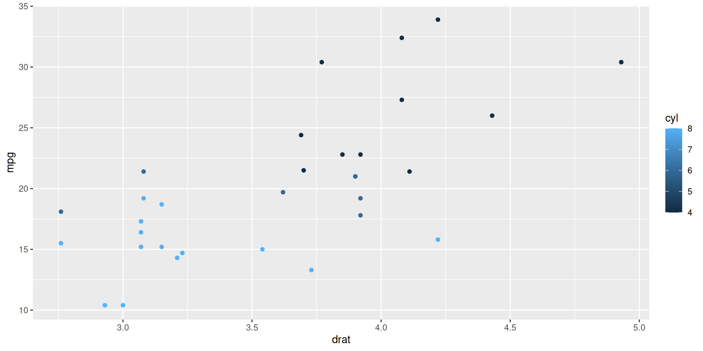

2. Introduction to Quarto
Basics of writing with Quarto
2024-07-12
Your analysis and its story üìñ
Recording your data analysis story (= the choices you make) is important ⚠️
A story is not easy to extract from code:
Solution : tell your story together with your code!
Question
Literate programming
Literate programming combines programming with documentation language
Coined by Donald E. Knuth in 1984 (!)
Code follows the documentation (and not the other way around)
Tell the story of your project
Project : a collection of code, notebooks, environments and data that serve the same analysis aim
Work in projects to:
Define goals and tasks
Organize yourself
Keep a good documentation
Communicate about methods, goals, results etc.
Word of advice: keep projects small!
Quarto projects
Documents : html, pdf and MS word
Presentations : Revealjs (html), Powerpoint (pptx) and Beamer (pdf/latex)
Websites
Books
Quarto project files
_quarto.yml: YML file with project-wide settings.git: Everything required for version control with gitmy_awesome_project.Rproj: R-project based settingsmy_awesome_project.qmd: Where the work is done!
A qmd file
Front matter (YML format):
--- title: "My awesome project" author: "Jan Janssen" date: 2023-06-20 format: html: theme: cosmo toc: true ---
Markdown text
Code blocks
Quarto example
Contents of my_new_analysis.qmd:
Quarto example
After rendering:
Markdown - text formatting
*italics*, **bold**, ***bold italics***italics , bold , bold italics
superscript^2^ / subscript~2~superscript2 / subscript2
~~strikethrough~~strikethrough
`verbatim code`verbatim code
Markdown - heading
# Header 1
## Header 2
### Header 3
#### Header 4
Markdown - lists
Unordered list
- item 1 - sub-item 1 - sum-item 2 - sub-sub-item 1
Ordered list
1. ordered list2. item 2
ordered list
item 2
sub-item 1
sub-sub-item 1
Markdown - links
[ website ](https://www.go-fair.org) GO fair website
Markdown - images
 {#fig-logo width="300" fig-align="left"}
As you can see from Figure 1 , it is red.
Writing code - chunks
```{r} library (ggplot2)|> ggplot (aes (x = drat, y = mpg, color = cyl)) + geom_point ()```

Writing code - chunks
```{r} head (mtcars[, 1 : 3 ]) |> knitr:: kable ()```
Mazda RX4
21.0
6
160
Mazda RX4 Wag
21.0
6
160
Datsun 710
22.8
4
108
Hornet 4 Drive
21.4
6
258
Hornet Sportabout
18.7
8
360
Valiant
18.1
6
225
Markdown & code - quarto magic
```{r} #| label: "fig-mpg-vs-drat" #| fig-cap: "mpg versus drat" #| fig-align: "left" library (ggplot2)|> ggplot (aes (x = drat, y = mpg)) + geom_point () + theme_bw ()```
Figure 2: mpg versus drat
From Figure 2 you can see there is a positive correlation.
Quarto - other use cases
Write a manuscript from source code üéâ More info here
Create presentations (including powerpoint exports!)
Write your thesis in Quarto, more about books
Maybe now is the time to get started with your personal website
Exercises
Use Rstudio to: